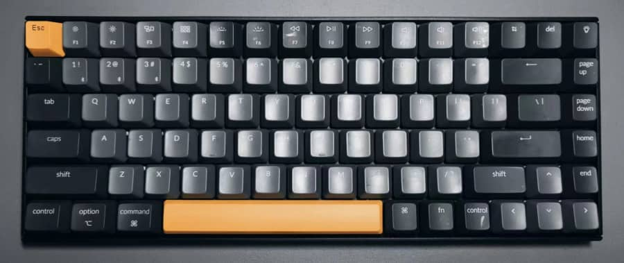

京东京造 Keychron K2 键盘操作说明书

蓝牙连接
Kechron K2 支持 3 台蓝牙设备间的切换。
长按 Fn + 1/2/3 键 3 秒，激活蓝牙配对，找到配对名称 Keychron K2，点击即可连接。
配对多台设备后，按 Fn+1/2/3 键即可切换到对应设备。
一键恢复
长按组合键 Fn + J + Z 三秒，蓝牙复位，灯光闪烁后，蓝牙重启，恢复出厂设置。
侧面键功能
- Type-C 接口：支持充电，有线连接
- 系统切换：从左到右依次为 Win/Android 、 Mac/iOS
- 连接方式切换：从左到右依次为蓝牙连接、关闭、有线连接
发布于:
2023/11/12